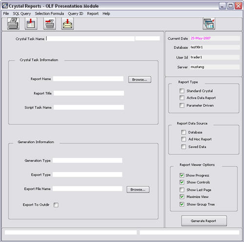

Crystal Reports
Overview
The Crystal Reports Master window is a much more robust screen than the Crystal Reports Viewer, providing more details and in-depth information.
After a Crystal Report has been designed and saved it can be executed from within the system via a Crystal Task. A Crystal Task can be defined and executed once, or it can be saved to the system database making it available to other users. Crystal Tasks are created, executed, and maintained through a Crystal Reports window. The title bar of the window displays the module from which it was launched.
A Crystal Task consists of a saved Crystal report (.rpt file), export options, Crystal Task properties, a plug-in/script (optional), and Crystal report properties. When a Crystal Task is saved to the system database, the user names it and the system assigns a unique Crystal Task ID.
Accessing This Window/Screen
To access this window:
1. Select the Crystal Reports icon  from OpenLink Central.
from OpenLink Central.
The following window displays:

Other ways to access this window:
· Select the Message Center icon from OpenLink Central. The Message Center window displays. Choose View à Crystal Report Viewer from the menu.
· Select the Services Manager icon from OpenLink Central. The Services Manager window displays. Select the Workflow Services tab. Choose View à Crystal Report Viewer from the menu.
· Select the Accounting Manager icon from OpenLink Central. The Accounting Manager window displays. Click the Crystal Reports Module icon.
· Open the Trading Manager. Right-click Main Group node to display Group Menu. Select Crystal Reports.
· Open the Operations Manager. Select the Confirmation icon from the Daily Operations tab. The Confirmation window displays. Click the Crystal Reports Module icon.
· Open the Operations Manager. Select the Settlements icon from the Daily Operations tab. The Settlements window displays. Click the Crystal Reports Module icon.
Menu Items
This window has the following menu items:
|
Menu |
Item |
Description |
|
File |
Open Report |
Allows the user to select a report saved in the crystal report format (.rpt). |
|
|
Opens the Crystal Report Viewer window. |
|
|
|
New Crystal Task |
Clears all fields and check boxes. This allows entry of data for a new Crystal Task. |
|
|
Load Crystal Task |
Allows the user to select a saved Crystal Task and load it on screen. |
|
|
Save Crystal Task |
Saves the displayed information on screen to the database as a Crystal Task. The system assigns a unique Crystal Task ID when a Crystal Task is saved. |
|
|
Save Crystal Task As |
Saves the information displayed on screen to the database as a new Crystal Task (i.e., a new unique Crystal Task ID is assigned). |
|
|
Delete Crystal Task |
Deletes a Crystal Task from the database. Load the Crystal Task on screen and select this option to delete it. |
|
|
Print Screen |
Prints the current window. |
|
|
Close All Report Windows |
Cancels and closes all open Crystal Report Viewer windows. |
|
|
Exit |
Closes this window and all report viewing windows. |
|
SQL Query |
|
The options on this menu can be used to manipulate the SQL query statements associated with the report. A Crystal report can be loaded directly or via a saved Crystal Task. |
|
|
View SQL Query |
Allows privileged users to view the SQL query statements associated with the currently loaded report. |
|
|
Edit SQL Query |
Allows privileged users to edit the SQL query statements associated with the currently loaded report. Changes the SQL query to the query string supplied as a parameter. Use this function to update the SQL query that will be used to print the report, typically to add optimizations to the WHERE clause. Any changes made are only in effect for the current session (e.g. The SQL query changes made while this option is in use cannot be saved with the report). Note: The Select clause of the SQL statement using this option cannot be modified. |
|
|
Import SQL Query |
Allows privileged users to import SQL query statements from a text file. The FROM, WHERE, and ORDER BY clauses of the currently loaded report are overwritten by the imported query. The SELECT clause is not affected. The new query statements are only in effect for the current session. |
|
|
Export SQL Query |
Allows privileged users to export the SQL query statements associated with the currently loaded report to a text file. |
|
Selection Formula |
|
The options on this menu can be used to view or edit the selection formula association with the loaded report. |
|
|
View Selection Formula |
Allows privileged users to view the Crystal-defined selection formula associated with the currently loaded report. |
|
|
Edit Selection Formula |
Allows privileged users to edit the Crystal-defined selection formula associated with the currently loaded report. Changes the selection formula to the formula string supplied as a parameter. This function can be used by itself to replace a known record selection formula. Example: {ab_tran.tran_num} > 21335. Changes are only in effect for the current session. |
|
Query ID |
|
When a query is executed through one of the system query utilities, a unique query ID is assigned. This query ID, and the unique IDs of the items selected through the query, are saved in a table called query_result. The query_result table is used in system ad-hoc reports to select data for the report. The options on this menu pertain to the query_result table. |
|
|
View Query ID |
Displays the query ID that is passed to the Crystal Reports if the Ad-Hoc Report property is selected. |
|
|
View Query Results |
Displays a list containing the unique IDs of items that were selected by executing a system query. If the Ad-Hoc Report property is selected, this list is passed to Crystal Reports. |
|
Report |
Report Summary |
Displays the report summary information for the currently loaded report (Author, Title, Subject, Keywords, and Comments). |
|
|
Report Information |
Displays information (e.g., Author, Number of Pages) related to the currently loaded report. |
Options |
Display Mode |
Toggles between two different window display modes. Use this option to display (or remove) a pick list indicator on pick list fields. |
|
Help |
System Help |
Displays information about this window. |
|
|
Engine Version |
Displays the current version of the Crystal Print Engine. |
|
|
Help |
Displays the Help window. |
|
|
Crystal Report Help |
Opens the Crystal Reports help file, crw.hlp, from the user’s sysdir. (This file must be placed in the sysdir of the user’s system directory structure to make Crystal Reports help available from this menu.) |
|
|
Crystal Reports About |
Displays information on the Crystal Reports version. |
|
|
Opens the About window. |
Buttons
This window contains the following buttons:
|
Button |
Description |
|
|
Performs the same function as File à Print Screen. |
|
|
Displays the current report in a viewing window. (This performs the same function as pressing the Generate Report button with a Generation Type of View Report.) |
|
|
Prints the current report to the default printer. (This performs the same function as pressing the Generate Report button with a Generation Type of Print Report.) |
|
|
Exports the current report to any of the formats supported by Crystal. Supported formats include HTML, ODBC, Word, Excel, Lotus Notes, text files, and e-mail. . (This performs the same function as pressing the Generate Report button with a Generation Type of Export Report.) |
|
|
Invokes a Crystal Report Viewer window that allows users to print, view, or export previously generated reports. |
Browse |
On the Crystal Task Information section of the window, it allows the user to browse through directories to select a desired report. The default directory may be set by specifying the environment variable AB_CRYSTAL_DIR in the system’s run script. On the Generation Information section of the window, this allows the user to browse through directories to specify an export destination file. |
|
Generate Report |
Generates the Crystal report specified in the window. |
Fields
This window contains the following fields:
Crystal Task Information
|
Field |
Description |
|
Crystal Task Name |
The name of the task associated with this report. |
|
Report Name |
Specifies the full path and file name of a saved Crystal report. There are four ways to load a desired report:
|
|
Report Title |
Displays the text that displays in the title bar of the Report Viewing window when a view of the selected report is generated. When a new Crystal Task is created, this text defaults to the Report Title as specified in the Crystal report file. This text may be edited. |
|
Script Task Name |
Specifies the name of a plug-in/script (optional) to be executed before running the selected report. A plug-in/script task may be used to prepare data for the report. The task may write data to User Tables in your database, to flat text files, or to an Active Data Object in memory. |
Generation Information
|
Field |
Description |
|
Generation Type |
Specifies the type of output to be produced when the Generate Report button is clicked. Click the field to get a pick list of available Generation Types. The available choices are:
|
|
Export Type |
If Generation Type is ‘Export Report’, specifies the format of the export file to be produced. A system pick list displays the supported export formats. |
|
Export File Name |
If Generation Type is ‘Export Report’, specifies the name of the destination file that the selected report is exported to. |
|
Export to Outdir |
If selected and Generation Type is ‘Export Report’, exports report to the current Outdir Report directory for the current system date. If selected, the Export File Name field should only contain a filename (without the full path). Example: {outdir}/reports/97Apr09/output_report.rpt |
|
Current Date |
Displays the current date of the system. The current date is initialized by the Business Date setting defined in the System Date Roll feature in the Operations Manager (if you do not have the Accept Trading Date Updates security privilege enabled). You may change the Current Date setting for your session only in the Market Manager or using the Current Date Roll AFE Service from OpenLink Central. Your session's Current Date setting is displayed on many system windows and can be used to calculate initial default values for deal settlement date, trade date, start date, and maturity date. It cannot be changed in this window. |
|
Database |
Displays the name of the system database the user is currently working in. Display only. |
|
User Id |
Displays the system user ID of the user’s current system session. Display only. |
|
Server |
Displays the name of the server on which the user’s system data resides. Display only. |
Report Type
|
Field |
Description |
|
Standard Crystal |
If selected, the Crystal Report gets information from database tables and requires no parameters. |
|
Active Data Report |
If selected, the Crystal Report inputs data directly from the returnt table of the selected task. Returnt should consist of a one COL_TABLE column with each row being a table to import into Crystal Reports. The row number of returnt should coincide with the ttx file number in Crystal Reports. A Crystal Active Data Report uses a plug-in/script to define and populate a table of information to be passed to Crystal Reports through shared memory. Active Data must be selected as one of the data sources for the report. |
|
Parameter Driven |
If selected, the Crystal Report inputs data from the returnt table of the selected task. Returnt should be a one row table with one column for each of the parameters in the report. Each column type in returnt should correspond to the column type of the parameter. A system Crystal Parameter Report uses a plug-in/script to supply data to Crystal Parameter Fields defined in the report. |
Report Data Source
|
Field |
Description |
Database |
If selected, gets the data from the database. |
|
Ad Hoc Report |
If selected, the Crystal Report inputs the Query Id into first parameter value of report. To manually enter Query Id, uncheck this field. A Crystal Ad-hoc Report is one that uses the results of a system query as input to the report. Ad-hoc reports can only be executed from system modules that have a query utility. These modules are the Trading Manager, the Accounting Manager, and the Confirm and Settlement windows of the Operations Manager. Ad-hoc reports cannot be run from the system’s Main Control Panel Crystal Reports icon. |
|
Saved Data |
If the Save Data With Report option (in Crystal Reports) is selected when a report is saved, the user can view the saved data by checking this field on the Crystal Task. This property is useful if the user wishes to see a sample of the report without actually refreshing the data behind it. |
Report Viewer Options
|
Field |
Description |
|
Show Progress |
If selected, a progress dialog box displays when exporting records to a specified export format. (This field is only relevant when the Generation Type is set to Export Report.) |
|
Show Controls |
If selected, control icons display in the Report Viewing window. Control icons include page navigation, print icon, export icon, group tree icon, view size icon, and more. (Note: If this property is not selected, the page navigation control icons do not display in the Report Viewing window. Therefore, the user may only see one page of their report.) |
|
Show Last Page |
If selected, the last page of the report is the first page to display in the viewing window. When not selected, the first page displays first. This field allows the user to quickly see grand totals without having to page through a report. |
|
Maximize View |
If selected, the Report Viewing window displays in maximized form. |
|
Show Group Tree |
If selected, a group tree displays on the left side of the Report Viewing window. Group trees allow users to quickly go to report pages pertaining to a particular group. |